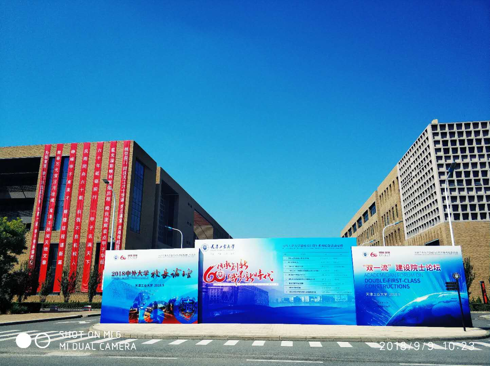
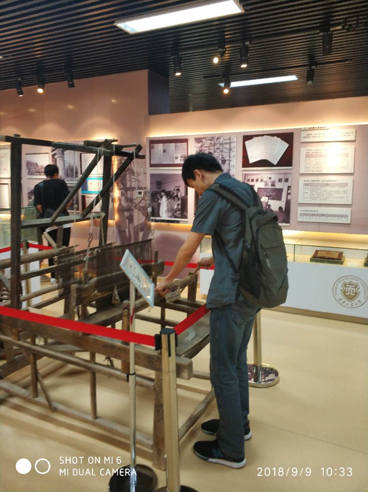
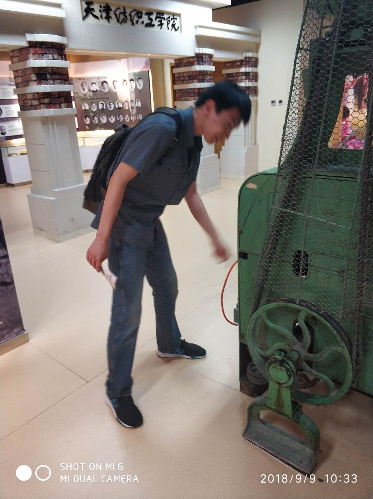
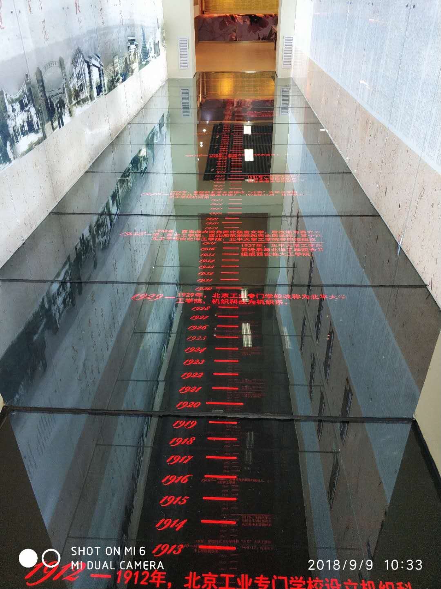

在记录自己今天的感受前，先来介绍一下我大学仅有的几个好朋友之一———>老郭（也就是今天的主人公李同学）！我和老郭的认识源于电子设计比赛，认知于电子设计比赛，结交于电子设计比赛，虽然我们不是一个班的，但是我们在很多问题上交流的很多，从他身上也学到了很多为人处世的道理——>谦逊、踏实、担当，还有感恩！
早上十点钟我们本来约定在大学城地铁站见面，但是很巧的是，在营口道转3号线的时候，小亮竟然与老郭完美的偶遇于一趟车的相邻车厢。（这就是缘分！哈哈！）上车后第一眼就看到了他，远远地看去，瘦了一圈，可能是来自于工作的压力人就会瘦吧！身穿一件深灰色的衬衣与牛仔裤，戴着耳机，（程序员可能都是这样的装备吧！）也在寻觅着我。老郭还是老郭，还是那样的幽默风趣，还是那样的思考着前行着前行着而又思考着，其实小亮心里一直挺为他惋惜的，但是一直又鼓励着他，让他自信起来，相信自己，不要因为过去的事带着自卑的情绪而影响现在的自己，因为你值得更好地未来，没错，你值得！！！我们俩就像失散多年的老友一样，还是当年的那个老郭与于谦，相谈甚欢。
到了大学城地铁站，我建议骑个小黄去学院吧，老郭说咱们走过去吧，我说好，这样也可以用脚步重新再走一遍这个地方。于是，我们就顶着今天的太阳，感受着校庆60周年的余热，北门的一句“欢迎校友回家”甚是暖心，是啊，才毕业不到三个月的我们，已然是这所大学的校友，感叹时间过得如此的飞快，老郭突然冒出一句：“下一次回到这里就不知道是什么时候了，或许在十年后吧！”我紧接着附和道：“是啊，可能是十年后了吧！”之所以与老郭的关系不断深入，就是因为知道他的每一句话背后的故事，以及他在想什么，而他所想的同时也是我想的，或许这就是我们能够说到一块的原因吧。此刻，他又在感叹，感叹曾经的故事！走在宽大的校园马路上，随处可见工大60周年校庆的牌子，还挺美的，与大家分享一下哈！

走到这里的时候，突然有三四个中年阿姨，问我们：“同学，你知道校史馆怎么走吗？”我和老郭给这些校友前辈指了校史馆的位置，老郭说要不咱们也去看看吧，之前我没去过，我说好。就这样，我们作为年轻校友在前面给校友前辈带路，到了校史馆，我和老郭在前面观看学校的历史与珍贵的仪器，顺便听讲着学生讲解员给她们的讲解。在走到一台上了年纪的纺织仪器面前，老郭出于一贯的质疑与好奇思维，尝试着搞明白它的机械原理（被我偷拍了，哈哈）

还有这个—————>

在经过时间里程计的时候，我突然握住老郭的大手，我说一起见证这伟大的时刻吧，而老郭突然配乐道：“当当当当。。。。。。”我禁不住笑了起来，你这是瓦格纳的《婚礼进行曲》啊，有点尴尬，哈哈。

参观完校史馆，我们迫不及待的赶紧前往学院，先去了老师办公室，结果发现没人，可能是周末的原因吧。。。。。。。。然后我们就去考研自习室找了会煜大神，时间也十一点了，我们商量着要不先去吃饭去吧，就边走边聊，老郭和会煜大神谈起来更是津津有味，他们两更是同道中人。（这次回来，发现大家都没怎么变，还是老样子，真切、幽默、调侃、又互相关心着彼此的发展，或许这就是好朋友最真的面貌吧！）吃饭回来在学院一楼又聊了聊，聊到了过去，聊到了现在，还聊到了未来。
聊到了大概十二点半左右，我和老郭看着时间也不早了，不能影响了会煜大神的节奏，我们就与他告别离开了，希望今年他能够考上自己心仪的学校，也是我们专业，甚至学院最有希望与能力的。其实，自己从他那里也学到了很多很多，做事态度认真，求真务实、追求完美、说话只说自己很有把握的话，给人一种非常踏实的感觉与印象，就是每一件事都交给他，让人很放心，而且他不仅会完成任务，而且还会给你优化与一些建议，这就是他，会煜大神，关于他的故事已然成为我们专业，乃至学院的神话，人人皆知，人人皆视其为榜样！
再后来，我和老郭联系了一下老师，老师说他刚到办公室，我们去办公室找他，就这样，我和老郭准备了半个小时就去看望老师了。和老师谈了两三个小时，谈到了过去，谈到了现在，谈到了未来。谈到了学业、谈到了工作、谈到了个人理想。老郭又有些感触了，(我总觉得他有些不甘心，有些自卑)老师似乎也发现了，就鼓励他说其实做技术积累个两三年也挺好的，现在的研究生动手能力太差了，连最基本的仪器都不会使用，到时候找工作就不如你们这些已经工作了两三年的，只是他们起点比你们现在高罢了，老郭听后觉得也有道理，目光些许明亮起来，给老师说，他有这个自信能够在单位里做好。（以老郭的能力与思维能力，我相信三五年后，或许我该叫他李所或者李部长了。）后来又和老师聊了很多，老师也相应的给了一些建议，让我们不管在社会上还是学校里，都要实事求是，踏踏实实做技术，规划好自己的时间与人生，该来的总会来的，要懂得隐忍与坚守！！！
四点左右，我和老郭看着时间不早了，也不想打扰老师工作（周末老师还来实验室，可见他的敬业与乐业精神所在）我们就和老师道别后，离开了。
最后想说，自己虽然现在已是一名研究生了，两年半后自己也面临着找工作，进入社会这个象牙塔，到时候是以怎样的姿态以及怎样的精神面貌迎接那时候的社会与工作，全在这不到三年里的每一天的进步与成长，就像老郭一样，思考着前行着前行着而又思考着，生活就是这样。人生路上能够遇到这样的恩师很难得，也很庆幸自己能够在求学路上遇见很多这样的恩师，古语云：“十年树木，百年树人；插柳之恩；终生难忘！”最后，明天是教师节，提前预祝天下的所有教师节日快乐！


上一篇
 2019花开不败
2019花开不败
今天是2019年3月21号，距离小亮上次发文已经过去一年了，在这一年里，发生了很多事情，最重要的是小亮没有坚持写作，没有坚持分享，没有坚持敲代码，罪过罪过。这是2019年的第一篇博客，小亮在这里立一个flag,以后每周更新三篇博客，不能断！！！坚持九个月，看看这一年自己的收获！！！不逼自己一把，真的是不知道坚持的力量和魅力。This is for you! I promise!
2019-12-18
本篇
 这里的人与这里的故事
这里的人与这里的故事
在记录自己今天的感受前，先来介绍一下我大学仅有的几个好朋友之一———>老郭（也就是今天的主人公李同学）！我和老郭的认识源于电子设计比赛，认知于电子设计比赛，结交于电子设计比赛，虽然
2018-09-09